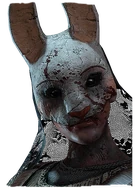

|
- Охотник (англ. "The Trapper") — один из персонажей игры Dead by Daylight в роли убийцы.
Доступен для выбора сразу после покупки основной игры.
Настоящее имя убийцы — Эван Макмиллан (англ. Evan Macmillan).
Убийца, способный контролировать карту, благодаря установке Медвежьих капканов, в которые могут попасть выжившие.
"Я вступил в капкан что-же делать он уже рядом..."
Оружие - Тесак
Сложность - Низкая
Сила - Медвежий капкан
Скорость - 4.6 м/с
Радиус террора - 32 метра
Рост - Высокий
Охотник
|
|
Призрак (англ. "The Wraith") — один из персонажей игры Dead by Daylight в роли убийцы.
Доступен для выбора сразу после покупки основной игры. Настоящее имя убийцы — Филипп Оджомо (англ. Philip Ojomo).
Скрытный убийца, который может исчезнуть и снова появиться благодаря своему Плачущему колоколу.
"К счастью я услышал его колокол..."
Оружие -
Топор Азарова
Сила-
Плачущий колокол
Сложность -
Низкая
Скорость -
4.6 м/с
Радиус террора - 32 м
Рост - Высокий
Призрак
|
|
Деревенщина (англ. "The Hillbilly") — один из персонажей игры Dead by Daylight в роли убийцы.
Доступен для выбора сразу после покупки основной игры.
Настоящее имя убийцы — Макс Томпсон младший (англ. Max Thompson Jr.).
Убийца с высокой мобильностью, который может быстро передвигаться на большие расстояния и сражать выживших с одного удара благодаря своей бензопиле.
"Красный свет...Звуки бензопилы..."
Оружие - Молот
Сила - Бензопила
Сложность - Умеренная
Скорость - 4.6м/c
Радиус террора - 32м
Рост -Высокий.
Деревенщина
|
|
Медсестра (англ. "The Nurse") — один из персонажей игры Dead by Daylight женского пола в роли убийцы.
Доступен для выбора сразу после активации бесплатного дополнения "Последний вздох".
Настоящее имя убийцы — Салли Смитсон (англ. Sally Smithson).
Быстрая и смертоносная убийца, которая может совершать скачки сквозь препятствия и резко сокращать дистанцию благодаря своей силе - Последний вздох Спенсера.
"Её крики пугали всё больше и больше..."
Оружие-
Хирургическая пила
Сила -
Последний вздох Спенсера
Сложность -Очень высокая
Скорость - 3.8 м/с
Радиус террора - 32м
Рост - Средний
Медсестра
|
|
Тень (англ. "The Shape") — один из персонажей игры Dead by Daylight в роли убийцы.Имеет 3 стадии,на каждой стадии разная скорость.Вышел в игре с появлением карты Хэденфилд.Персонажа можно получить двумя путями
первый покупка DLC ,Второй купить в игре за золотые.
"Выходя из-за угла - оглядывайтесь..."
Оружие-Нож
Сила - Чистое зло
Сложность - Умеренная
Скорость - 4.2 м/с / 4.6 м/с.
Радиус террора -0 м / 16 м / 32 м
Рост - Высокий
Тень
|
|
Ведьма (англ. "The Hag") — один из персонажей игры Dead by Daylight женского пола в роли убийцы.
Имеет 10 ловушек,при активироние которых появляется пугало ведьмы,и даёт возможность маньяку телепортироватся на это погуло.
Пришла в игру с картой Гнилое болото.
"Наступая на её капкан, оставьте отзыв..."
Оружие-Когти
Сила - Почерневший проводник
Сложность - Очень высокая
Скорость -4.4 м/c
Радиус террора - 24 м
Рост - Средний
Ведьма
|
|
Доктор (англ. "The Doctor") — один из персонажей игры Dead by Daylight в роли убийцы.
Использует шоковую терапию и убирает возможность у выжевшего прыгать скидывать/перепрыгивать доски,окна.Появился вместе с приходом локации Мемориальный институт Лэри.
"Шокотерапию этого доктора я не забуду..."
Оружие-Дубинка
Сила - Искра Картера
Сложность - Высокая
Скорость -4.6 м/с
Радиус террора - 32м
Рост -Высокий
Доктор
|
|

Охотница (англ. "The Huntress") — один из персонажей игры Dead by Daylight женского пола в роли убийцы.
Доступен для выбора сразу после активации бесплатного дополнения "Колыбельная для темноты".
Настоящее имя убийцы — Анна, фамилия неизвестна.
Убийца, которая может поражать выживших на расстоянии, бросая охотничьи топоры.
"Топоры этой Дамы опасны"
Оружие-Топор
Сила - Охотничьи топоры
Сложность - Умеренная
Скорость - 4.4 м/с
Радиус террора - 20м
Рост - Высокий
Охотница
|
|
Каннибал (англ. "The Cannibal") — один из персонажей игры Dead by Daylight в роли убийцы.Имеет пилу и молот,появился в игре с локацией Ферма.
Настоящее имя убийцы — Бубба Сойер (англ. Bubba Sawyer). С бензопилой наперевес, этот убийца может сорваться в безумный рывок, используя бензопилу Буббы, смертельно раня всех, кто попадется ему на пути.
"Он не ест людей - он любитель расспиливать"
Оружие-Молот
Сила - Бензопила Буббы
Сложность - Умеренная
Скорость - 4.6 м/с
Радиус террора - 32 м
Рост - Высокий
Каннибал
|
|
Кошмар (англ. "The Nightmare") — один из персонажей игры Dead by Daylight в роли убийцы.
Настоящее имя убийцы — Фредди Крюгер (англ. Frederick "Freddy" Charles Krueger).
Убийца из ночных Кошмаров, затягивающий выживших в мир снов с помощью способности "Демон снов".
"Всё что я помню это Сон..."
Оружие-Перчатка с лезвием
Сила - Демон снов
Сложность - Умеренная
Скорость -4.6 м/с
Радиус террора - 32м
Рост - Средний
Кошмар
|
|
Свинья (англ. "The Pig") — один из персонажей игры Dead by Daylight женского пола в роли убийцы.Настоящее имя убийцы — Аманда Янг (англ Amanda Young).
Истязающая убийца, способная скрытно передвигаться пригнувшись и нападать из засады.
Также может надеть обратный медвежий капкан на выжившего при смерти, заставляя тем самым избавиться от ловушки до истечения таймера.
Если отведенное время истечет, выживший мгновенно умирает.
"Игра началась..."
Оружие-Спрятанный клинок
Сила - Баптизм Пилы
Сложность - Высокая
Скорость -4.6 м/с
Радиус террора - 32м
Рост -Средний
Свинья
|
|
Клоун (англ. "The Clown") — один из персонажей игры Dead by Daylight в роли убийцы.
Настоящее имя убийцы — Кеннет Чейз (англ. Kenneth Chase).
Расчетливый убийца, способный загнать и контролировать выживших благодаря броскам бутылок "Добивающего тоника"
который образует большие облака ядовитого газа. Отравленые выжившие будут страдать от размытого зрения, медленнее передвигаться и кашлять,
выдавая свою позицию.
"С ним лучше не шутить..."
Оружие-Мадам Бабочка
Сила - Добивающий тоник
Сложность - умеренная
Скорость -4.6м/с
Радиус террора - 32м
Рост -Высокий
Клоун
|
|
Дух (англ. "The Spirit") — один из персонажей игры Dead by Daylight женского пола в роли убийцы.
Настоящее имя убийцы — Рин Ямаока (англ. Rin Yamaoka).
Убийца, путешествующая между измерениями, способная заставать выживших врасплох благодаря своей силе — Преследование Ямаоки.
Ее сила позволяет ей незаметно телепортироваться из одного места в другое.
"Всегда оглядывайтесь..."
Оружие-Сломанная катана
Сила - Преследование Ямаоки
Сложность - Высокая
Скорость - 4.4м/с
Радиус террора - 24м
Рост - средний
Дух Рин
|
|
Легион (англ. "The Legion") — один из персонажей игры Dead by Daylight в роли убийцы.
Банда безжалостных убийц, гораздых гонять беспомощных выживших благодаря силе внутреннего "Дикого бешенства".
Во время бешенства атаки наносят длительный урон, который в итоге подкашивает не сумевших подлечиться выживших.
Имена участников банды, выступающих от имени Легиона — Фрэнк Моррисон, Сьюзи, Джо, Джули.
"Нож вошёл сильно глубоко..."
Оружие-Охотничий нож
Сила - Дикое Бешенство
Сложность - Низкая
Скорость -
4.6 м/с, 5.2 м/с (в бешенстве)
Радиус террора - 32м
Рост - Средний
Легион
|
|
Чума (англ. "The Plague") — один из персонажей игры Dead by Daylight женского пола в роли убийцы.
Настоящее имя убийцы — Адирис (англ. Adiris).
Фанатичная убийца, заражающая выживших на короткой дистанции способностью "Очищение от мерзости".
Если пораженные этой инфекцией выжившие не успевают отмыться в купели преданности, они получат ранение или ослабление.
"От её заражения лекарства нету..."
Оружие-Нечестивая курильница
Сила - Очищение от мерзости
Сложность - Высокая
Скорость - 4.6м/с
Радиус террора - 32м
Рост - Высокий
Чума
|
|
Гоуст Фейс (англ. "The Ghost Face") — один из персонажей игры Dead by Daylight в роли убийцы.
Убийца который наблюдал за выжившими неделю и собрал всю информацию про них,начиная с места жительства ,заканчивая местами работы.
При использывании силы собирает стадию,после чего может положить игрока с первого удара.
"Я его не видел,а вы?"
Оружие-Тактический нож
Сила - Ночной Саван
Сложность - Высокая
Скорость - 4.6м/с
Радиус террора - 32м
Рост - Средний
Гоуст Фейс
|
|
Демогоргон (англ. "Demogorgon") — один из персонажей игры Dead by Daylight в роли убийцы.
Вместо лица - раскрывающаяся лепестками пасть с зубами-иглами;
крупные изогнутые когти бритвенной остроты;
мощные конечности, позволяющие настичь жертву одним прыжком...
Демогоргон - ужасающий монстр, опасный в любом измерении.
Демогоргон может ставить порталы ,делать рывок который ломает скинутые доски,к сожалению попадение рывком наносится урон такой же как и от дефолтного удара.
"Проходя мимо портала,не забудьте его сломать..."
Оружие-Чудовищные когти
Сила - Из бездны
Сложность - Высокая
Скорость - 4.6 м/с
Радиус террора - 32м
Рост - Высокий
Демогоргон
|
|
Они (англ. "Oni") — один из персонажей игры Dead by Daylight в роли убийцы.
Настоящее имя убийцы — Казан Ямаока (англ. Kazan Yamaoka).
Чудовищный убийца, способный вбирать силу из крови раненых жертв и превращаться в свирепого демона за счёт накопленный энергии.
С помощью силы "Гнев Ямаоки" он может стремительно бросаться на выживших и наносить убийственные удары своей дубинкой-канабо.
Ошибки против данного убийцы не простительны,одна ошибка может стоить всей игры...
"Я не могу убежать он сильно быстрый..."
Оружие-Меч Ямаоки Канабо
Сила - Гнев Ямаоки
Сложность - Очень высокая
Скорость -4.6 м/с
Радиус террора - 32м
Рост - Высокий
Они
|
|
Стрелок (англ. "Deathslinger") — один из персонажей игры Dead by Daylight в роли убийцы.
Настоящее имя убийцы — Калеб Куинн (англ. Caleb Quinn).
Мстительный убийца, способный издалека пронзать гарпунами и притягивать выживших при помощи "Искупителя".
После последнего нерфа,убийца стал значительно слабее,против него стало легче отыгрывать,по этому этот убийца теперь очень слаб...
"Снайпер - гарпун - смерть..."
Оружие-Смэрть Бейшору
Сила - Искупитель
Сложность - Высокая
Скорость - 4.4м/с
Радиус террора - 32м
Рост - Высокий
стрелок
|
|
Палач (англ. "Executioner") — один из персонажей игры Dead by Daylight в роли убийцы.
Настоящее имя убийцы неизвестно.
Палач — контролирующий карту убийца, способный создавать опасные препятствия и мучить выживших.
Тех, кто подвергся действию его способностей, он может сажать в клетку искупления, которая является особой разновидностью крюка,
и собственноручно убивать умением "Страшный суд".
Играя против Палача нужно быть бдительным,и внимательным,т.к. допускать ошибки это будет глупо и неуместно.
"Как то раз я попался в клетку..."
Оружие-Великий Нож
Сила - Обряды осуждения
Сложность - Очень высокая
Скорость - 4.6м/с
Радиус террора - 32м
Рост - Высокий
Палач
|
|
Мор (англ. "The Blight") — один из персонажей игры Dead by Daylight в роли убийцы.
Настоящее имя убийцы — Тальбот Граймс (англ. Talbot Grimes).
Непредсказуемый убийца, способный сильно ускоряться во время рывка вперед и отталкиваться от препятствий,
чтобы ранить выживших с помощью своей "Моровой скверны".
От Мора убежать сложно но возможно путём мансов и беготни.
"Однажды раз он схватил меня...".
Оружие-Крушитель костей
Сила - Моровая Скверна
Сложность - Очень высокая
Скорость - 4.6 м/с
Радиус террора - 32 м
Рост - Средний
Мор
|
|
Близнецы (англ. "The Twins") — один из персонажей игры Dead by Daylight в роли убийцы.
Настоящее имена близнецов — Шарлотта и Виктор Дейе (англ. Charlotte & Victor Deshayes).
Пара совместно действующих убийц, обладающих особой силой "Узы крови", которая позволяет им разделяться и охотиться сообща.
Наблюдая за игрой Близнецов можно понять что переиграть их сложно.
Придуманно много тактический действий за этого убийцы.
"Я уже был возле выхода,но этот Виктор...".
Оружие-Резак Марселя
Сила - Узы крови
Сложность - Очень высокая
Скорость - 4.6 м/c
Радиус террора - 32м,15м(У Виктора)
Рост - Высокий,Низкий(Виктор).
Близнецы
|
|
Трюкач (англ. "The Trickster") — один из персонажей игры Dead by Daylight в роли убийцы.
Настоящее имя убийцы — Хак Чиун (англ. Ji-Woon Hak).
Убийца-метатель, способный обрушить на жертву град ножей с помощью способности "Коронный номер".
Сам по себе убийца слабый,но у него есть свои фишки,этим он и особенный.
"Оказывается кинжалы могут отскакивать от стен...".
Оружие-Полированный Головотяп
Сила - Коронный номер
Сложность - Умеренная
Скорость - 4.4 м/с
Радиус террора - 24 м
Рост - Средний
Трюкач
|
|
Немезис (англ. "The Nemesis") — один из персонажей игры Dead by Daylight в роли убийцы.
Неумолимый убийца, способный поражать цели на среднем расстоянии своим щупальцем.
В охоте ему помогают блуждающие по территории зомби.
"Слава богу зомби глупые..."
Оружие-Голые кулаки
Сила - Т-Вирус
Сложность - Высокая
Скорость - 4.6 м/c
Радиус террора - 32м
Рост - Высокий
Немезис
|
|
Сенобит (англ. "Cenobite") — один из персонажей игры Dead by Daylight в роли убийцы.
Настоящее имя убийцы — Эллиот Спенсер (англ. Elliott Spencer).
Убийца-призыватель, который умеет управлять метательными цепями и пытать всех выживших одновременно с помощью Конфигурации Плача.
"Этот крюк подобрался не заметно..."
Оружие-Цепь с крюком
Сила - Зов боли
Сложность - Очень высокая
Скорость - 4.6 м/с
Радиус террора - 32 м
Рост - Высокий
Cенобит
|
|
Художница (англ. "The Artist") — один из персонажей игры Dead by Daylight в роли убийцы.
Настоящее имя — Кармина Мора (англ. Carmina Mora).
Убийца со способностями к разведке на расстоянии, умеющая рассылать зловещих ворон по карте, чтобы находить и атаковать выживших.
Заставит вас в расплох,смотрите по сторонам что-бы не попастся на Ворон.
"Я думал я хорошо спрятался от Ворон..."
Оружие-Острый Мастихин
Сила - Терзающие птицы
Сложность - Умеренная
Скорость - 4.6 м/c
Радиус террора - 32 м
Рост - Средний
Художница
|
|
Онрё (англ. "The Onryō") — один из персонажей игры Dead by Daylight женского пола в роли убийцы.
Настоящее имена убийцы — Садако Ямамура (англ. Sadako Yamamura).
Мстительный призрак, владеющий силой ненша.
Онрё перемещается незримо и бесшумно, воплощаясь лишь перед атакой.
Умеет перемещатся по телевизорам которые находятся по всей карте,откат на которые после телепортации 100 секунд.
"Я спрятался возле телевизора,и тут появилось оно..."
Оружие-Кольцо Ярости
Сила - Шквал ужаса
Сложность - Высокая
Скорость -4.6 м/с
Радиус террора - 24м
Рост - Низкий
Онрё
|
|
Грязь (англ. "Dredge" ) — один из персонажей игры Dead by Daylight в роли убийцы.
Грязь - воплощение темных мыслей когда-то процветающей общины.
Она способна телепортироваться между шкафчиками и окутывать карту всепоглощающим мраком.От Грязи будет сложно скрыться,держись по дальше от шкафов.
"Не грозит мне,шкафчик далеко..."
Оружие-Узловатый придаток
Сила - Царство мрака
Сложность - Умеренная
Скорость - 4.6 м/c
Радиус террора - 32 м
Рост - Высокий
Грязь
|